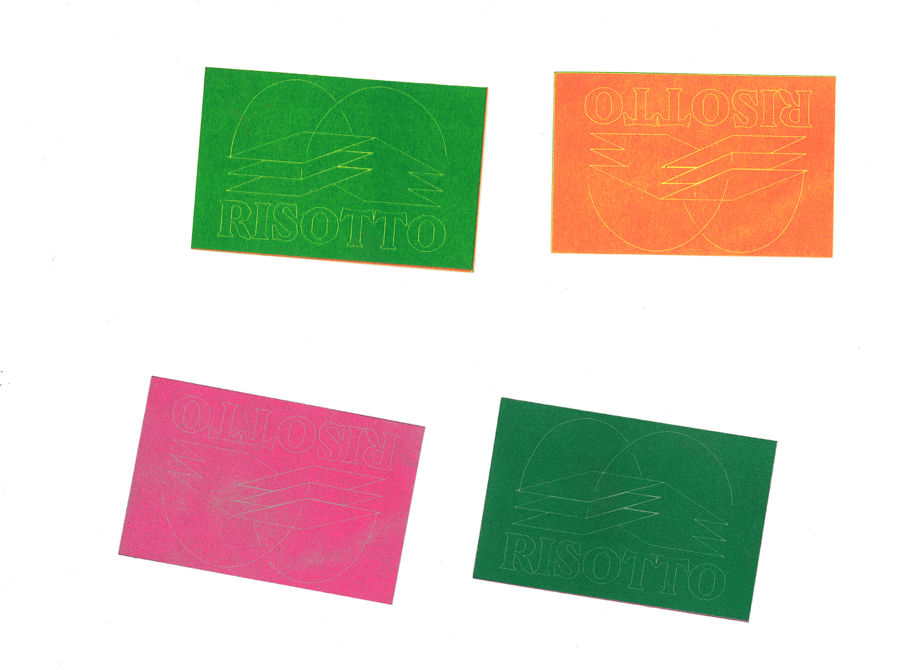

“ RISOTTO AMIENS ”
Risotto Amiens est un projet collaboratif crée avec un autre élève de l'ÉSAD d'Amiens. Ce projet vise à mettre en avant la risographie par le biais d'expérimentions.
Nous sommes là pour aider les étudiants à imprimer mais aussi pour expérimenter avec la risographie en imprimant plusieurs affiches à thème tout au long de l'année mais également en imprimant un guide sur la risographie.
Risotto est avant tout un terrain de jeu ludique pour les étudiants.
RISOTTO AMIENS
2021-
Risographie
/
